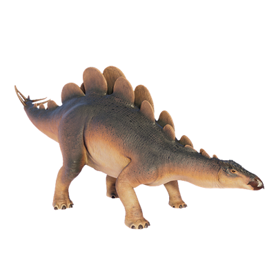

Useful Website
Wuerhosaurus is a large plant-eating dinosaur from the stegosaurid family, and first existed during the Early Cretaceous period in Asia. Wuerhosaurus can grow to more than 8m in length and weighs in excess of four tonnes, partly due to the thick, bony plates that protect its body from predators – and it also has a spiked tail that help it to defend itself when under attack.
